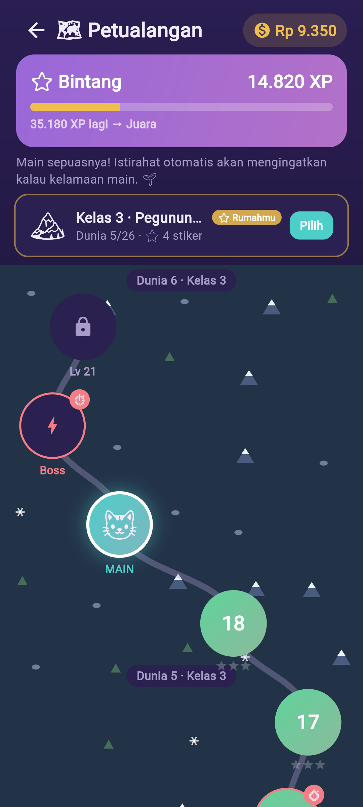

🐱
AyoMath
Game matematika SD yang gratis, offline, dan ramah anak.
AyoMath adalah aplikasi latihan matematika untuk anak SD Kelas 1–6 di Indonesia. Dirancang sebagai proyek sosial: gratis, tanpa iklan, dan bisa dipakai tanpa internet — agar bisa dipakai di mana saja, termasuk di daerah dengan jaringan terbatas.
📚Sesuai Kurikulum MerdekaKelas 1–6, dari berhitung dasar sampai pecahan, desimal, geometri, dan soal cerita bertingkat.
📶Bekerja offlineProgres belajar tersimpan di HP. Tidak butuh akun, tidak butuh kuota.
🛡️Aman & menghormati privasiTanpa iklan, tanpa pelacak, tanpa data pribadi anak. Ada batas waktu bermain & Area Orang Tua.
⭐Belajar nilai baikSetiap petualangan menyelipkan nilai: kebersihan, kejujuran, hormat, dan kebaikan hati.
Lihat AyoMath
Belajar jadi petualangan seru — naik level, soal pilihan ganda, koreksi yang lembut, dan banyak permainan asik.



🪙 Koin (Rp) di dalam game hanya didapat dengan bermain — bukan uang asli, dan tidak ada pembelian dalam aplikasi.